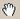
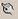

3.2. Eszközök menü
3.2.1. Névkeresés
A képernyõn lévõ térképen található objektumok
(utak, települések, vizek stb.) között kereshet.
A
funkció a „Térképkezelõ eszköztár”  ikonjával is elindítható.
ikonjával is elindítható.
A keresett névbõl az elsõ két karaktert beírva a „Név” ablakban, a lista ablakfeltöltõdik.
A beírást a "Cím" kiválasztás fejezetben leírtak szerint végezzeel.
A „Név” alatt
ábécé sorrendben megjelennek az objektumok nevei. További
karakterekkel a lista tovább szûkíthetõ. Amennyiben a listában megtalálta
a keresett objektumot, kattintson rá egyszer és nyomja meg a „Mutat” gombot. A rendszer átvált a térképre, bekeretezi,
besatírozza és ránagyít az adott objektumra, ezzel is segítve Önt az objektum
megtalálásában.
Fontos! Az elsõ karaktert, amennyiben ékezetes, nagybetûvel
kell írni. Ha azt szeretné, hogy a program egy ikonnal is megjelölje a kiválasztott
objektumot, kattintson a „Mutató objektum használata” melletti négyzetre.
3.2.2.  Koordináta
Koordináta
A „Szélesség” mezõbe az „Y”az északi szélességet (47,…) írja be.
A
„Hosszúság” mezõbeaz
„X” a keleti hosszúságot
(17,…..) írja be.
A
„Típus”
legördülõ ablakban a bevitt koordináta fajtáját lehet kiválasztani.
Figyelem! Az EOV koordinátákat egyben, a különféle GPS koordinátákat a fok után ponttal elválasztva kell beírni.
3.2.3. POI
A „Kategória”
gombra kattintva megjelenik a "Kategória
választó ablak".
Ekkor a "Település" gobra kattintva a szokásos módon kiválaszthatja
azt a települést amelyen a POI-kat keresi.
A „Koordináta alapján”
kör akkor aktiv ha, a „Helyzetérzékeny
menü” POI megjelenítés sorát használja. „Nyomkövetés”
vagy "Navigátor"
használata esetén a program rákérdez, hogy a "Koordinátát GPS"
-bõl vegye e. ekkor a "YES" (IGEN) gombot megnyomva a GPS pozíció
adott sugarú körében keresi a POI-kat.
A „Sugár”-ral
jelölt ablakban, azt a távolságot adhatja meg kilométerben, amin belül szeretné
megtalálni a POI-t. Ez a funkció csak a navigációt elindítva vagy egy saját
POI-t kiválasztva mûködik, mivel a programnak szüksége van a pontos pozíciójára.
Az „OK”
gombra kattintva, a program megjeleníti az elõzetesen beállított POI-k pontos
helyét.
A „Mégse”
gombra kattintva a program visszalép az elõzõ képernyõhöz.
3.2.4. Nagyítás
A ikon kiválasztása
után a nagyítandó térképrészlet fölé mozogva a mutatópálcával, annak folyamatos
lenyomásával folyamatosan, egy-egy kattintással pedig kis lépésekben nagyítani
tudja a térképeket. A nagyítás mindig arra a pontra, mint középpontra történik,
ahová a mutatópálca a képernyõhöz ér.
A
funkció a „Térképkezelõ
eszköztár”megfelelõ ikonjára való kattintással, vagy a "PDA
navigáló gombjának" felfelé nyomásával is elindítható.
3.2.5. Kicsinyítés
A ikon kiválasztása
után a kicsinyítendõ térképrészlet fölött mozogva a mutatópálcával, annak
folyamatos lenyomásával folyamatosan, egy-egy kattintással pedig kis lépésekben
kicsinyíteni tudja a térképeket. A kicsinyítés mindig arra a pontra, mint
középpontra történik, ahová a mutatópálca a képernyõhöz ér.
A
funkció a „Térképkezelõ
eszköztár” megfelelõ ikonjára  való kattintással, vagy a "PDA
navigáló gombjának" lefelé nyomásával is elindítható.
való kattintással, vagy a "PDA
navigáló gombjának" lefelé nyomásával is elindítható.
3.2.6. Kijelölõ nagyítás
A ikon arra szolgál, hogy a térkép egy kijelölt területét oly módon nagyítsa
fel, hogy a kijelölt rész a képernyõ térkép megjelenítésre fenntartott részét
teljes egészében betöltse. A funkció kiválasztása után a mutatópálcával vigye
a kijelölendõ rész valamely sarkára, majd folyamatosan lenyomva mozgassa a
pálcát oly módon, hogy a mozgatással kialakuló négyszög lefedje a felnagyítandó
részt. Ekkor emelje fel a pálcát, és a képernyõn kinagyítva meg fog jelenni
a kívánt térképrészlet.
A
funkció a „Térképkezelõ
eszköztár” megfelelõ ikonjára
való kattintással is elindítható.
A
funkció a „Térképkezelõ
eszköztár” megfelelõ ikonjára  való kattintással is elindítható.
3.2.8. Távolságmérés
Az
ikont kiválasztva a mutatópálcával kattintson arra a pontra, ahonnan a távolságmérést
kezdeni akarja, ezután kattintson arra a pontra, amelynek a távolságára az
elõzõ ponthoz képest kíváncsi. A két pont között a program ekkor egy zöl d
vonalat húz. A „Térképkezelõ eszköztár”
alatt lévõ „Mértékléc”ablakból leolvashatja
a két pont távolságát. A távolságmérést nem csak két pont között tudja a program
elvégezni, hanem törtvonalat is rajzolhat ennek a ikonnak a segítségével, vagyis a két ponton túl, további
pontokat is kijelölhet a térképen, és az ezek között húzott zöld vonalak távolságának
összege olvasható ekkor le a „Mértékléc”
ablakból.
Gyakorlatilag
ez a funkció egy olyan mérõszalagként használható, mely egy-egy pontban megtörve
méri a távolságot. A képernyõn látható zöld vonalak megszüntethetõk a
„Távolság mérés törlése”
funkcióval.
3.2.9. Távolságmérés törlése
3.2.10. Névceruza
A funkció a „Térképkezelõ
eszköztár” megfelelõ ikonjára  való kattintással is elindítható.
3.2.11. Térkép törlése
3.2.12. Teljes képernyõ
Ez az ikon a beállított eszköztárakon, és segédablakokon kívül mindent
kikapcsol a képernyõn (fejléc, menüsor stb.) és a térkép a lehetõ legnagyobb
képméretet használja a képernyõn. A teljes képernyõ megszüntetése a térkép
bal felsõ sarkában megjelenõ „X”-re
kattintva lehetséges.